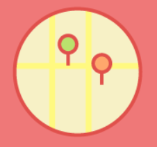
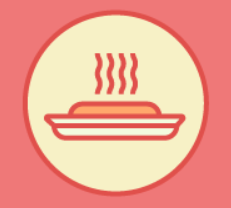

Peak nutrition and ripeness
No sitting for long periods on a truck or grocery shelf losing nutrients and enzymes

Procide better routing,districting, and delivery for local restaurants that aren't already equipped for delivery service
Seasonally tailored menus
Some restaurants are growing in-house produce and herbs from their own rooftop, window box, or urban garden

Food travels fewer miles as customers are only offered delivery options from restaurants in close geographic proximity, rather than from across town
More variety than the grocery store
Smaller farms can raise meat and produce variaties that most groceries can't offer because of spoilage during shipping

shorter delivery times for orders so customers recekve food that is more fresh
Pure and organic
Less pesticide contamination, as most small/local farmers are organic
Carbon emissions associated with hyper local food delivery are substantially lower, in comparison to traditional high-mileage intracity food couriers